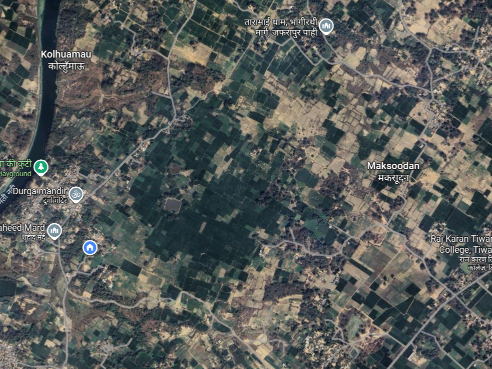

मकसूदन का इतिहास | History of Maksoodan
ग्राम मकसूदन का इतिहास सदियों पुराना है। गोमती नदी के उत्तर और पश्चिम में स्थित यह गांव प्राचीन काल से ही सांस्कृतिक और धार्मिक महत्व का केंद्र रहा है। गांव का नाम स्थानीय ऐतिहासिक व्यक्तित्व से जुड़ा हुआ है।
The history of Maksoodan dates back centuries. Located on the north and west banks of River Gomti, this village has been a center of cultural and religious significance since ancient times. The village name is associated with local historical personalities.
गोमती नदी का महत्व | Significance of River Gomti
गोमती नदी ने गांव की संस्कृति, कृषि और जीवनशैली को गहराई से प्रभावित किया है। नदी के घाट धार्मिक और सामाजिक गतिविधियों का केंद्र रहे हैं।
पूरा इतिहास पढ़ें | Read Full History